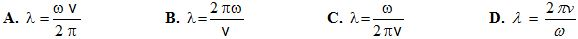
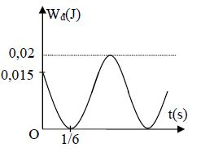

Đề môn Vật Lý số 8
SƠ GD & ĐT THANH HÓA TRƯỜNG THPT LÝ THÁI TỔ
90
:phút
00
:giây
Ghi Chú
Câu 1
Một vật dao động tắt dần có các đại lượng nào sau đây giảm liên tục theo thời gian?
A: Biên độ và gia tốc
B: Biên độ và tốc độ
C: Biên độ và cơ năng
D: Li độ và tốc độ
Câu 2
Phát biểu nào sau đây là
không
đúng?
A: Độ to của âm là một đặc trưng sinh lí gắn liền với tần số âm.
B: Độ cao của âm là một đặc trưng sinh lí gắn liền với tần số âm.
C: Âm sắc là một đặc trưng sinh lí gắn liền với đồ thị dao động âm.
D: Độ to của âm là một đặc trưng sinh lí gắn liền với mức cường độ âm.
Câu 3
Chọn câu trả lời đúng. Chu kỳ dao động nhỏ của con lắc đơn phụ thuộc
A: tỉ số giữa trọng lượng và khối lượng của con lắc.
B: khối lượng của con lắc.
C: trọng lượng của con lắc.
D: khối lượng riêng của con lắc.
Câu 4
Hai nguồn sóng kết hợp S
1
, S
2
dao động cùng pha, cách nhau 20 cm, có chu kỳ sóng là 0,1s. Tốc độ truyền sóng trong môi trường là 50 cm/s. Số cực đại giao thoa trên đoạn S
1
S
2
là:
A: 11
B: 7
C: 9
D: 10
Câu 5
Trong đoạn mạch xoay chiều chỉ có tụ điện thì điện áp ở hai đầu đoạn mạch sẽ
A: trễ pha π/4 so với dòng điện.
B: sớm pha π/4 so với dòng điện.
C: sớm pha π/2 so với dòng điện.
D: trễ pha π/2 so với dòng điện.
Câu 6
lò xo có khối lượng không đáng kể độ cứng k = 100N/m, đầu trên treo vào điểm cố định đầu dưới treo một vật khối lượng m = 200g. Cho vật dao động điều hòa với phương trình x = 6cos(ωt - π/3) (cm). Lấy g = 10 m/s
2
. Độ lớn của lực đàn hồi cực đại của lò xo là
A: 8N
B: 5N
C: 16N
D: 6N
Câu 7
Một chiếc đàn ghita, một chiếc đàn viôlon và một chiếc kèn săcxô cùng phát ra một nốt la ở cùng độ cao. Tai ta vẫn phân biệt được ba âm đó vì chúng khác nhau ở
A: mức cường độ âm
B: cường độ âm.
C: âm sắc
D: tần số.
Câu 8
Một vật nhỏ dao động điều hòa theo một trục cố định. Phát biểu nào sau đây đúng?
A: Lực kéo về tác dụng vào vật không đổi.
B: Quỹ đạo chuyển động của vật là một đoạn thẳng.
C: Quỹ đạo chuyển động của vật là một đường hình sin.
D: Li độ của vật tỉ lệ với thời gian dao động.
Câu 9
Con lắc đơn có chiều dài không đổi, dao động điều hòa với chu kỳ T. Khi đưa con lắc lên cao thì chu kỳ dao động của nó
A: không thay đổi.
B: không xác dịnh được tăng hay giảm.
C: giảm xuống
D: tăng lên.
Câu 10
Một tên lửa bắt đầu bay lên theo phương thẳng đứng với gia tốc a = 3g. Trong tên lửa có treo một con lắc đơn dài l = 1m, khi bắt đầu bay thì đồng thời kích thích cho con lắc thực hiện dao động nhỏ. Bỏ qua sự thay đổi gia tốc rơi tự do theo độ cao. Lấy g = 10m/ s
2
;π
2
≈ 10. Đến khi đạt độ cao h =1500m thì con lắc đã thực hiện được số dao động là:
A: 14
B: 20
C: 18
D: 10
Câu 11:
Một mạch điện xoay chiều có u là điện áp tức thời ở hai đầu đoạn mạch và i là cường độ tức thời qua mạch. Chọn phát biểu đúng.
A: i luôn luôn biến thiên sớm pha hơn u.
B: i và u luôn biến thiên ngược pha.
C: i và u luôn biến thiên cùng tần số.
D: i và u luôn biến thiên cùng pha.
Câu 12:
Một con lắc lò xo gồm vật nhỏ khối lượng 400 g, lò xo khối lượng không đáng kể và có độ cứng 100 N/m. Con lắc dao động điều hòa theo phương ngang. Lấy π
2
= 10. Dao động của con lắc có chu kì là
A: 0,4s
B: 0,8s
C: 0,6s
D: 0,2s
Câu 13:
Một dây đàn dài 20cm, rung với 4 bó. Bước sóng trên dây bằng
A: 0,4m
B: 10m
C: 0,1m
D: 1m
Câu 14:
Chọn cậu sai khi nói về sóng phản xạ:
A: Cùng tần số sóng tới.
B: Sóng phản xạ luôn cùng pha sóng tới
C: Tại một đầu cố định sóng phản xạ làm đổi dấu phương trình.
D: Luôn cùng vận tốc nhưng ngược hướng với sóng tới.
Câu 15:
Cơ năng của một vật dao động điều hòa
A: bằng động năng của vật khi vật tới vị trí cân bằng.
B: biến thiên tuần hoàn theo thời gian với chu kỳ bằng một nửa chu kỳ dao động của vật.
C: biến thiên tuần hoàn theo thời gian với chu kỳ bằng chu kỳ dao động của vật.
D: tăng gấp đôi khi biên độ dao động của vật tăng gấp đôi.
Câu 16:
Một dao động hình sin có phương trình x = Acos(ωt + φ) truyền đi trong một môi trường đàn hồi với vận tốc v. Bước sóng thoả mãn hệ thức nào?

A
B
C
D
Câu 17:
Vận tốc truyền âm trong không khí là 340m/s,khoảng cách giữa hai điểm gần nhau nhất trên cùng một phương truyền sóng dao động ngược pha nhau là 0,85m. Tần số của âm là:
A: f = 200 Hz.
B: f = 80 Hz.
C: f = 225 Hz.
D: f = 170 Hz.
Câu 18:
Mức cường độ âm nào đó được tăng thêm 30 dB thì cường độ của âm tăng lên gấp
A: 2000 lần
B: 1500 lần
C: 500 lần
D: 1000 lần
Câu 19:
Dao động điều hòa theo phương trình x = 6cos2πt (cm). Biên độ và chu kì dao động của vật là
A: 4cm, 1Hz.
B: 6cm,1s.
C: 4cm, 1s.
D: 6cm, 2s.
Câu 20:
Cường độ dòng điện chạy qua một tụ điện có biểu thứ i = 1,5 cos (100πt + π/6) (A). Biết tụ điện có điện dung C = 1,2 . 10
-4
/ π (F). Điện áp tức thời giữa hai bản tụ có biểu thức là:
A: u =125 cos (100πt - π/3) (V.)
B: 5u =150 cos (100πt - π/3) (V).
C: C. u =125 cos (100πt + π/6) (V).
D: D. u =180 cos (100πt - π/6) (V).
Câu 21:
Một con lắc lò xo treo thẳng đứng, tại vị trí cân bằng lò xo dãn 10cm. Nâng vật nặng lên phía trên cách vị trí cân bằng 2√3 cm rồi truyền cho nó một vận tốc v
0
= 20cm/s theo phương thẳng đứng xuống dưới. Sau khi được truyền vận tốc vật dao động điều hòa. Lấy g = 10m/s
2
. Tỉ số giữa lực đàn hồi cực đại và cực tiểu của lò xo:
A: 7/3
B: 5/3
C: 4/3
D: 11/3
Câu 22:
Hiệu điện thế giữa hai đầu một đoạn mạch xoay chiều có biểu thức: u = 220√2cos100πt (V). Hiệu điện thế hiệu dụng của đoạn mạch là:
A: 220√2V
B: 220V
C: 110V
D: 110√2V
Câu 23:
Trong dao động điều hòa những đại lượng dao động cùng tần số với li độ là:
A: vận tốc, gia tốc và lực phục hồi.
B: vận tốc, gia tốc và cơ năng.
C: động năng, thế năng và lực phục hồi.
D: vận tốc, động năng và thế năng.
Câu 24:
Một vật dao động điều hòa với biên độ A = 5cm; tần số góc ω = 4π rad/s. Tốc độ trung bình nhỏ nhất của vật trong thời gian 1/6(s) là
A: 45cm/s
B: 15cm/s
C: 30cm/s
D: 60cm/s
Câu 25:
Một vật dao động điều hoà dọc theo trục Ox nằm ngang, gốc O và mốc thế năng ở vị trí cân bằng. Cứ sau 0,5s thì động năng lại bằng thế năng và trong thời gian 0,5s vật đi được đoạn đường dài nhất bằng 4√2cm. Chọn t = 0 lúc vật qua vị trí cân bằng theo chiều dương. Phương trình dao động của vật là
A: x = 2cos(πt - π/ 2)(cm).
B: x = 4cos(2πt - π/ 2)(cm).
C: x = 4cos(πt + π/ 2)(cm).
D: x = 2cos(2πt + π/ 2)(cm).
Câu 26:
Một chất điểm dao động điều hòa trên trục Ox có phương trình x = 8cos(πt + π/4 ) (x tính bằng cm, t tính bằng s) thì
A: chu kì dao động là 4 s.
B: chất điểm chuyển động trên đoạn thẳng dài 8 cm.
C: lúc t = 0 chất điểm chuyển động theo chiều âm của trục Ox.
D: vận tốc của chất điểm tại vị trí cân bằng là 8 cm/s.
Câu 27:
con lắc đơn thực hiện dao động bé trong thang máy khi đứng yên với biên độ góc 0,1rad. Lấy g=9,8m/s
2
. Khi vật nặng con lắc đang đi qua vị trí cân bằng thì thang máy đột ngột đi lên thẳng đứng với gia tốc a=4,9m/s
2
. Sau đó con lắc dao động điều hòa trong hệ quy chiếu gắn với thang máy với biên độ góc là
A: 0,057rad.
B: 0,082rad.
C: 0,032rad.
D: 0,131rad.
Câu 28:
Cho hai dao động điều hòa cùng phương,cùng tần số có phương trình lần lượt là: x
1
= 2cos(3πt + π/3), x
2
= 2cos3πt(cm). Dao động tổng hợp của hai dao động này có biên độ là
A: 4 cm
B: 2√3 cm
C: 2 cm
D: 2√2 cm.
Câu 29:
Có hai con lắc đơn giống nhau. Vật nhỏ của con lắc thứ nhất mang điện tích 2,45.10
-6
C, vật nhỏ con lắc thứ hai không mang điện. Treo cả hai con lắc vào vùng điện trường đều có đường sức điện thẳng đứng, và cường độ điện trường có độ lớn E = 4,8.10
4
V/m. Xét hai dao động điều hòa của con lắc, người ta thấy trong cùng một khoảng thời gian, con lắc thứ nhất thực hiện được 7 dao động thì con lắc thứ hai thực hiện được 5 dao động. Lấy g = 9,8 m/s
2
. Khối lượng vật nhỏ của mỗi con lắc là
A: 4,054 g.
B: 12,5 g.
C: 7,946 g.
D: 24,5 g
Câu 30:
vật dao động điều hòa có tần số góc ω = 10π rad/s. Gọi amax là gia tốc cực đại của vật. Khoảng thời gian ngắn nhất để vật đi từ vị trí có gia tốc a1 = |(a
Max
)/2| đến vị trí có gia tốc a
2
=| (√3a
max
)/2 | là
A: 1/120s
B: 1/180s
C: 1/20s
D: 1/60s
Câu 31:
Một con lắc đơn có khối lượng vật nặng là m, sợi dây mảnh có chiều dài l. Từ vị trí cân bằng, kéo vật sao cho dây treo hợp với phương thẳng đứng góc a
0
=60
0
rồi thả nhẹ. Lấy g =10 m/s
2
, bỏ qua mọi lực cản. Trong quá trình chuyển động thì độ lớn gia tốc của con lắc có giá trị nhỏ nhất bằng
A: 10√(2/3) (m/s
2
)
B: 0 (m/s
2
)
C: 10√(3/2) (m/s
2
)
D: 10√(5/3) (m/s
2
)
Câu 32:
Một phân xưởng cơ khí sử dụng một động cơ điện xoay chiều có hiệu suất 80%. Khi động cơ hoạt động sinh ra một công suất cơ là 7,5kW. Biết mỗi ngày động cơ hoạt động 8 giờ và giá tiền của một “số” điện công nghiệp là 2000 đồng. Trong một tháng (30 ngày), số tiền mà phân xưởng đó phải trả cho ngành điện là
A: 1.350.000đ
B: 5.400.000đ
C: 4.500.000đ
D: 2.700.000đ
Câu 33:
Một sợi dây đàn hồi hai đầu cố định đươc kích thích dao động với tần số không đổi. Khi lực căng sợi dây là 2,5 N thì trên dây có sóng dừng, tăng dần lực căng đến giá trị 3,6 N thì thấy xuất hiện sóng dừng lần tiếp theo. Biết tốc độ truyền sóng trên dây tỉ lệ căn bậc hai giá trị lực căng của sợi dây. Lực căng lớn nhất để trên dây xuất hiện sóng dừng là:
A: 90N
B: 15N
C: 130N
D: 18N
Câu 34:
Hai con lắc đơn giống hệt nhau, các quả cầu có kích thước nhỏ làm bằng chất có khối lượng riêng D = 8540 kg/m
3
. Dùng các con lắc nói trên để điều khiển các đồng hồ quả lắc. Đồng hồ thứ nhất đặt trong không khí và đồng hồ thứ hai đặt trong chân không. Biết khối lượng riêng của không khí là p = 1,3 kg/m
3
. Biết các điều kiện khác giống hệt nhau khi hai đồng hồ hoạt động. Nếu coi đồng hồ trong chân không chạy đúng thì đồng hồ đặt trong không khí chạy nhanh hay chậm bao nhiêu sau một ngày đêm.
A: 6,58 giây
B: 2,15 giây
C: 3,98 giây
D: 8,24 giây
Câu 35:
Một chất điểm dao động điều hòa với phương trình:x = 20cos(πt -5π/6) cm . Tại thời điểm 1 t gia tốc của chất điểm có giá trị cực tiểu. Tại thời điểm t
1
= t
2
+ Δt (trong đó t
2
< 2013T ) thì tốc độ của chất điểm là 10π√2 cm/s. Giá trị lớn nhất của Δt là
A: 4025,75s.
B: 4024,25s
C: 4025,25s
D: 4024,75s
Câu 36:
Tại hai điểm A và B trên mặt nước cách nhau 16cm có hai nguồn phát sóng giống nhau. Điểm M nằm trên mặt nước và trên đường trung trực của AB cách trung điểm I của AB một khoảng nhỏ nhất bằng 4√5 cm luôn dao động cùng pha với I. Điểm N nằm trên mặt nước và nằm trên đường thẳng vuông góc với AB tại A, cách A một khoảng nhỏ nhất bằng bao nhiêu để N dao động với biên độ cực tiểu?
A: 9,22cm
B: 8,75cm
C: 2,14cm
D: 8,57cm
Câu 37:
Đặt điện áp xoay chiều có giá trị hiệu dụng không đổi 150V vào 2 đầu mạch AB gồm AM chỉ chứa R, đoạn mạch MB chứa tụ C và cuộn cảm thuần L nối tiếp, L thay đổi được. Biết sau khi thay đổi L thì điện áp hiệu dụng 2 đầu mạch MB tăng 2√2 lần và dòng điện trước và sau khi thay đổi L lệch pha nhau π/2. Điện áp hiệu dụng 2 đầu mạch AM khi chưa thay đổi L là A.100
A: 100√2 V
B: 120V
C: 100V
D: 100√3
Câu 38:
Vật có khối lượng 400 g dao động điều hoà có đồ thị động năng như hình vẽ. Tại thời điểm t = 0 vật đang chuyển động theo chiều dương, lấy π
2
≈ 10 . Phương trình dao động của vật là:

A: x = 10cos(πt + π / 6) (cm) .
B: x = 10cos(πt - π / 3) (cm) .
C: x = 5cos(2πt - π / 3) (cm) .
D: x = 5cos(2πt + π / 3) (cm) .
Câu 39:
Hai nguồn phát sóng kết hợp A, B với AB = 16cm trên mặt thoáng chất lỏng, dao động theo phương trình u
A
= 5cos(30πt)mm ; u
B
= 5cos(30πt + π/2) mm .Coi biên độ sóng không đổi, tốc độ sóng v = 60cm/ s. Gọi O là trung điểm của AB, điểm đứng yên trên đoạn AB gần O nhất và xa O nhất cách O một đoạn tương ứng là
A: 1 cm; 6,5 cm.
B: 0,5 cm; 7,5 cm.
C: 0,25 cm; 7,75 cm.
D: 1cm; 8 cm.
Câu 40:
Con lắc lò xo thẳng đứng, lò xo có độ cứng k = 100N/m, vật nặng có khối lượng m = 1kg. Nâng vật lên cho lò xo có chiều dài tự nhiên rồi thả nhẹ để con lắc dao động. Bỏ qua mọi lực cản. Khi vật m tới vị trí thấp nhất thì nó tự động được gắn thêm vật m
0
= 500g một cách nhẹ nhàng. Chọn gốc thế năng là vị trí cân bằng. Lấy g = 10m/s
2
. Hỏi năng lượng dao động của hệ thay đổi một lượng bằng bao nhiêu?
A: Tăng 0,25J
B: Tăng 0,125J
C: Giảm 0,25J
D: Giảm 0,375J
Câu 41:
Hai dao động điều hòa cùng tần số x1=A
1
cos(ωt-π/6 ) cm và x2 = A
2
cos(ωt-π) cm có phương trình dao động tổng hợp là x=9cos(ωt+φ). để biên độ A
2
có giá trị cực đại thì A
1
có giá trị:
A: 9√3 cm
B: 7 cm
C: 15√3 cm
D: 18√3 cm
Câu 42:
Một sóng cơ học lan truyền trên mặt thoáng chất lỏng nằm ngang với tần số 10 Hz, tốc độtruyền sóng 1,2 m/s. Hai điểm M và N thuộc mặt thoáng, trên cùng một phương truyền sóng, cách nhau 26 cm (M nằm gần nguồn sóng hơn). Tại thời điểm t, điểm N hạ xuống thấp nhất. Khoảng thời gian ngắn nhất sau đó điểm M hạ xuống thấp nhất là
A: 1/120s
B: 1/60s
C: 1/12s
D: 11/120s
Câu 43:
Trên mặt nước có hai nguồn phát sóng kết hợp A, B dao động theo phương trình: u
A
= 5 cos(20πt) cm u
B
= 5cos(20πt + π )cm AB=20cm. Coi biên độ sóng không đổi, tốc độ sóng là 60 cm/s. Cho hai điểm M1 và M2 trên đoạn AB cách A những đoạn 12cm và 14cm. Tại một thời điểm nào đó vận tốc của M1 có giá trị là -40cm / s thì giá trị của vận tốc của M2 lúc đó là
A: -20cm/s
B: -40cm/s
C: 40cm/s
D: 20cm/s
Câu 44:
Mức cường độ âm tại một điểm cách nguồn âm 50m là 70dB. Biết ngưỡng đau của tai người là 10W/m2, cường độ âm chuẩn là I
0
= 10
-12
W/m
2
. Hỏi người nghe cảm giác nhức nhối trong tai khi đứng cách nguồn khoảng nào?
A: 2 cm
B: 4 cm
C: 5 cm
D: 3 cm
Câu 45:
Một dây thép dài AB = 60 cm hai đầu được gắn cố định, được kích thích cho dao động bằng một nam châm điện nuôi bằng mạng điện thành phố tần số 50 Hz. Trên dây có sóng dừng với 5 bụng sóng. Tốc độ truyền sóng trên dây là
A: 12 m/s.
B: 24 m/s.
C: 15 m/s.
D: 30 m/s.
Câu 46:
Một sợi dây OM đàn hồi dài 120cm có hai đầu cố định. Khi được kích thích trên dây hình thành 2 bụng sóng (với O và M là hai nút), biên độ tại bụng là A (cm) . Tại điểm P gần M nhất có biên độ dao động là A/ 2 (cm) thì khoảng cách MP bằng
A: 15 cm
B: 10 cm
C: 5 cm
D: 20 cm
Câu 47:
Một con lắc lò xo có độ cứng k=100N/m, vật nặng m=100g dao động tắt dần trên mặt phẳng nằm ngang do ma sát, với hệ số ma sát 0,1. Ban đầu vật có li độ lớn nhất là 10cm. Lấy g=10m/s
2
. Tốc độ lớn nhất của vật khi qua vị trí cân bằng là
A: 3,13m/s
B: 2,43m/s
C: 4,16m/s
D: 2,26m/s
Câu 48:
Dòng điện xoay chiều trong mạch RLC mắc nối tiếp có biểu thức cường độ i= 3√2 cos(100πt + 2π/3)(A) Trong một chu kỳ, thời gian lớn nhất kể từ lúc t
0
= 0 để dòng điện đạt giá trị cường độ tức thời i = 3√2/2 (A) là
A: 1/50 (s)
B: 1/70 (s)
C: 1/40 (s)
D: 1/60 (s)
Câu 49:
Một con lắc lò xo được đặt nằm ngang gồm lò xo có độ cứng k = 40 N/m và vật nặng khối lượng m = 0,4 kg. Từ vị trí cân bằng kéo vật ra một đoạn 5 cm rồi thả nhẹ cho vật dao động. Coi vật dao động điều hòa. Trong quá trình dao động của vật thì công suất tức thời cực đại của lực đàn hồi là
A: 0,25 W.
B: 0,5 W.
C: 2 W.
D: 1 W.
Câu 50:
Một con lắc lò xo, lò xo có khối lượng không đáng kể, độcứng 100N/m, vật nặng M = 300g có thể trượt không ma sát trên mặt phẳng nằm ngang. Hệ đang ở trạng thái cân bằng, dùng một vật m = 200g bắn vào M theo phương nằm ngang với tốc độ 2m/s. Va chạm là hoàn toàn đàn hồi. Gốc tọa độ là điểm cân bằng, gốc thời gian là ngay sau lúc va chạm, chiều dương là chiều lúc bắt đầu dao động. Tính khoảng thời gian ngắn nhất vật có li độ -8,8cm
A: 0,09 s
B: 0,26 s
C: 0,1 s
D: 0,4 s
Correct answers: